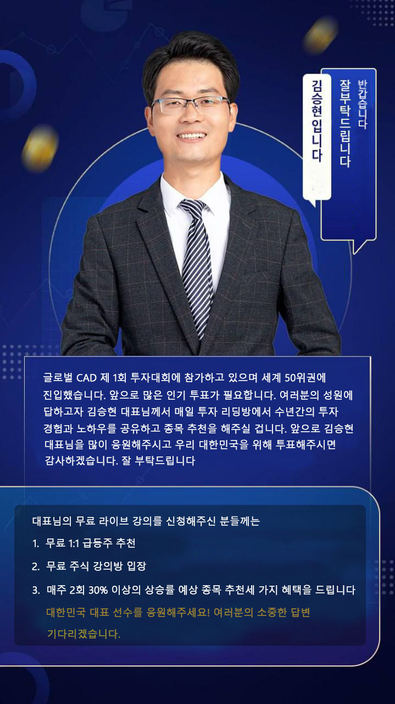
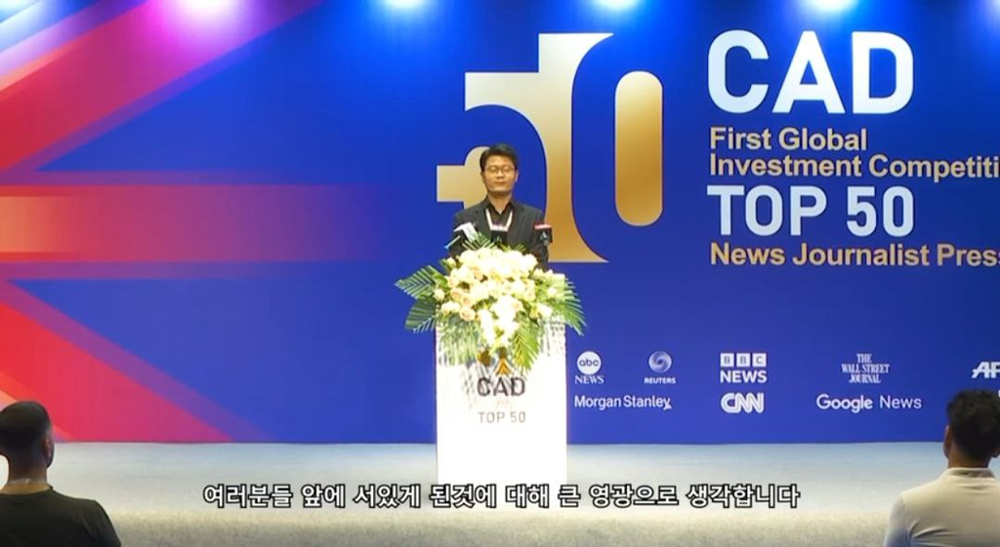
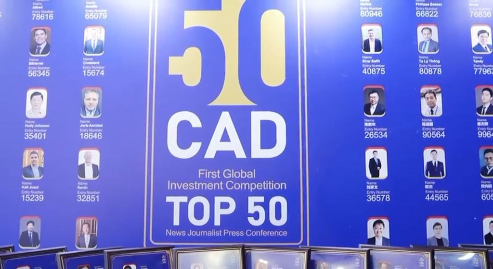
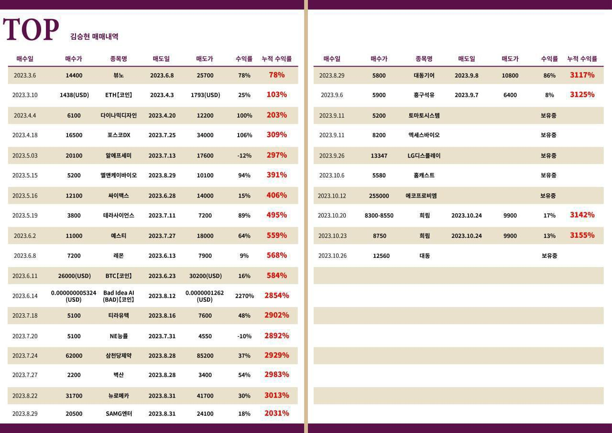

김승현 대표님
연세대학교 경영학과 학사
하버드 경영대학원 MBA 학위 월가 헤지펀드 펀드 매니저
모건스탠리 아시아 지역 투자 고문
칼라일 사모펀드 전문 펀드 매니저
전문 분야 :
경제 사이클에 대한 연구와 예측
통화 정책과 금리동향에 대한 분석과 방향성 예측
국제 경제 관계와 외환 시장에 대한 관찰과 해석
주식·외환·암호화폐의 미래 방향성 예측
별명 : 【미국 주식 저격수】【동아시아 주식시장 투자의 신】
투자 스타일 : 투자 스타일이 매우 냉정하지만 과감한 결단력으로 투자
를 하며 자산 관리는 매우 엄격하게 관리합니다.

교사 프로필
출생 : 1982년 12월 16일 대한민국 부산광역시에서 출생
주소: 현주소 서울
학력: 연세대학교에서 학사 학위를 받았고 년 미국 하버드대 경영대학원(Harvard Business School)에서 MBA 학위를 받았습니다.
그는 학업을 마치고 증권사에 입사하여 주목받는 금융 분석가 되었습니다.
경력:
연세대를 졸업한 뒤 국내 증권사에 입사했습니다.
증권회사 경력으로 풍부한 경험을 쌓았고
금융 분석과 연구 업무에 종사했습니다.
이 많은 경험 토대로 금융 시장과 주식 분석에 대해 깊이 이해를 하고 있습니다.
김승현대표님의 연구와 강의는 경제 및 금융 분야를 모두 포함하고 있습니다.
거시 경제 동향, 통화정책, 금융시장, 국제 경제 관계 등의 분야에 대해 깊게 연구를 진행했습니다.
김승현대표님은 대중에게 복잡하고 어려운 경제 개념을 명확하고 간결한 언어로 쉽게 설명하고
경제와 금융 시장에 대한 독창적인 견해를 가지고 있습니다.
김승현대표는 높은 수익을 줄 수 있는 주식 종목 추천과 시장 동향에 대한 정확한 예측으로 많은 찬사를 받았습니다. 펀더멘털과 테크놀로지를 결합한 분석 기법을 통해 투자자들에게 가치 있는 통찰력을 제공하고 한국 금융계에서 좋은 평판을 가지고 있습니다.
그분의 업무 경력과 전문 지식은 한국 금융 분석 분야에서 대표적인 인물로 꼽힙니다.
또한 그분은 거시 경제학 분야 연구에서 매우 많은 성과를 거두었습니다.

김승현 대표님의 투자사례
1: 2020 10-2022.1
37 달러 부근에서 브렌트 원유 매수, 85달러 부근에서 장기 보유 후 매도하여 2억 5천만 달러의 수익을 얻었습니다.
2: 2022. 3
러시아 루블화가 폭락했을 때, 과감한 판단으로 투자자들과 루블화 및 관련 투자 상품을 매수해 1억 달러 이상의 수익을 달성했습니다. 이 때의 3배가 넘는 수익률에 대한 이야기는 오랜 시간 많은 투자자들 사이에서 회자되었습니다.
3: 2022.12-2023.3
주변의 정보를 통해 홍콩이 곧 암호화폐를 합법적으로 거래할 수 있도록 개방한다는 것을 알고 중국에서 유일하게 승인된 토큰 CFX를 미리 매수했습니다. 2022년 3월, 1000%가 넘는 수익을 얻었으며 100만 달러로 1000만 달러가 넘는 수익을 달성했습니다.
4: 2023.1-2023.6
테슬라를 107달러에 매수해 145달러에 분할 매도, 252달러에 일괄 매도해 100% 이상의 수익을 달성했습니다.
5:2023.4
글로벌 CAD 투자대회 참가, 다이나믹 디자인 6,100원 매수 12,200원 매도로 보름만에 100% 수익을 달성했습니다.
6:2023.4-2023.7
글로벌 CAD 투자대회에서 포스코DX를 16,500원에 매수해 34,000원에 매도, 17,500원의 차익으로 106%의 수익을 달성했습니다.
2023년도에 들어서면서 대표님의 신기록은 더욱 빛났습니다.

제 1회 글로벌 CAD 투자 대회는 글로벌 온라인 투자 및 트레이딩 대회로, 참가자들은 모두 세계 최고의 애널리스트 및 트레이더입니다. 이 대회는 미국의 거대 펀드 기업인 Vanguard Group Inc 및 HanCash Finance와 같은 최고의 기업들이 공동으로 주최합니다. 올해 3월 1일 처음으로 행사를 주최한 Vanguard Group Inc의 강력한 업계 영향력을 바탕으로 제 1회 글로벌 CAD 투자대회에는 20개국 이상에서 10,000명 이상의 트레이더가 참가했습니다. 대한민국 대표 참가자 중 한 명인 김승현 대표님은 이제 상위 40위권 안에 들었습니다. 앞으로도 여러분의 강력한 투표와 지지가 필요합니다. 대회 기간동안 김승현 대표님은 매일 수많은 지지자들을 이끌어갈 것입니다. 예를 들어 실시간으로 정보를 공유해드리는 단체 채팅방에 들어오시면 추천주를 받아가실 수 있습니다. 대한민국을 대표하는 참가자를 위한 소중한 한 표, 꼭 행사해주시고 채팅방 입장시 매일 핫한 종목과 실시간 정보는 물론 스타벅스 기프티콘까지 푸짐한 선물 받아가실 수 있습니다. 감사합니다.